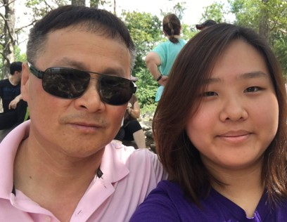

Hello! My name is Rachel Ahn. I am a senior, and I am
planning to graduate May 2020. I am studying Information Systems with a
Business track, and I hope to find a career in Web Development.
I have one younger sister, who is also graduating this semester with me. I
used to play the flute and piano. I played the flute from 4th grade through
9th grade, and I played the piano privately in elementary school for 4
years. In my spare time, I like to play video games, draw, and binge-watch
shows or Youtube videos. Some games I like to play are League of
Legends, Animal Crossing, Osu, Dead by Daylight, and Tetris. I tend to
gravitate towards playing League of Legends and Animal Crossing.
I have many friends who play League of Legends, so it is our go-to
game to spend time with each other. Animal Crossing is more focused
on single-player gameplay, so I do not need to play with other friends on
the game. However, the most recent edition, Animal Crossing: New Horizon,
allows online gameplay so we can visit our friend's places.

| Email: | rahn2@students.towson.edu |
| Year: | Senior |
| Major: | Information Systems - Business track |